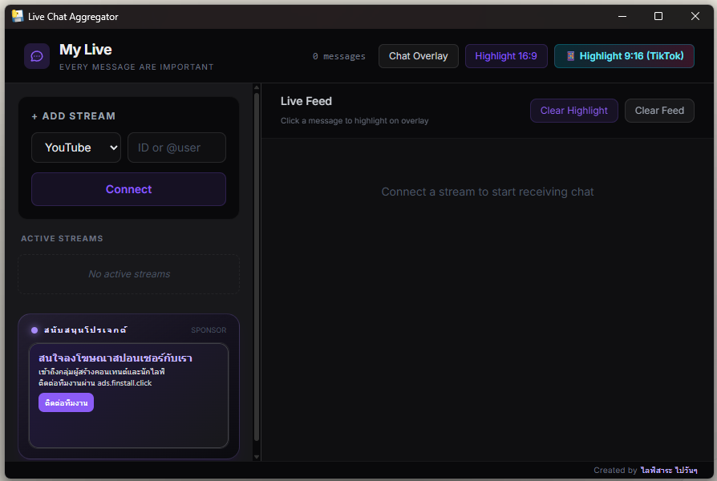

ดาวน์โหลดแล้วเปิดโปรแกรม
ไฟล์ EXE สำหรับ Windows แบบ Portable เปิดใช้งานได้โดยไม่ต้องติดตั้ง
MY LIVE · EVERY MESSAGE ARE IMPORTANT
รวมแชตจาก TikTok LIVE และ YouTube Live ไว้ในหน้าจอเดียว
เลือกข้อความที่ใช่ขึ้น OBS แล้วกลับไปโฟกัสกับคนดูของคุณ
ใช้งานฟรี · Portable EXE · ไม่ต้องติดตั้ง

LESS SWITCHING. MORE CONNECTING.
เมื่อแชตอยู่ในที่เดียว คุณก็มีเวลาให้คนดูมากขึ้น
อ่าน ตอบ และเลือกข้อความสำคัญได้จาก My Live
01 / YOUR CONTROL ROOM
เชื่อมต่อสตรีม ดูข้อความใน Live Feed และเลือกข้อความขึ้นจอ จากหน้าต่างเดียวที่ออกแบบมาให้คุณใช้งานระหว่างไลฟ์
TikTok LIVE + YouTube Live
02 / GIVE A MESSAGE THE SPOTLIGHT
คลิกเลือกข้อความจาก Live Feed เพื่อแสดงบน OBS ตั้งค่า Browser Source แล้วใช้ Chat Overlay หรือ Highlight ให้เข้ากับฉากของคุณ
Highlight 16:9 · Highlight 9:16
FROM CHAT TO YOUR LIVE
เลือกเมื่อพร้อม เปลี่ยนเมื่ออยากให้คนดูเห็นข้อความใหม่
READY FOR YOUR NEXT LIVE
สามขั้นตอนก่อนเริ่มใช้งาน
ไฟล์ EXE สำหรับ Windows แบบ Portable เปิดใช้งานได้โดยไม่ต้องติดตั้ง
เลือกแพลตฟอร์ม ใส่ @username ของ TikTok หรือ URL / Video ID ของ YouTube Live แล้วกด Connect
นำ URL จาก Chat Overlay หรือ Highlight ไปใส่ Browser Source แล้วจัดวางให้เข้ากับฉากไลฟ์
A FEW THINGS TO KNOW
ดาวน์โหลดและใช้งานฟรี ภายใน Dashboard มีพื้นที่โฆษณาสปอนเซอร์เพื่อสนับสนุนโปรเจกต์
TikTok ใช้ username หรือ profile URL ส่วน YouTube ใช้ URL ของไลฟ์หรือ Video ID 11 ตัวอักษร โดยสตรีมต้องเปิดไลฟ์และมีแชตให้เข้าถึง
เปิด Chat Overlay หรือ Highlight จาก My Live คัดลอก URL แล้วเพิ่ม Browser Source ใน OBS ต้องเปิดโปรแกรม My Live ไว้ระหว่างใช้งาน
คุณเปิดดูเว็บไซต์นี้บนมือถือได้ แต่ไฟล์โปรแกรมเป็น EXE สำหรับใช้งานบนคอมพิวเตอร์ Windows
MAKE YOUR NEXT LIVE MORE CONNECTED
ให้ My Live ช่วยดูแลพื้นที่ของทุกบทสนทนา
ดาวน์โหลด My Live ฟรีSource preview · ดูคำแนะนำ build